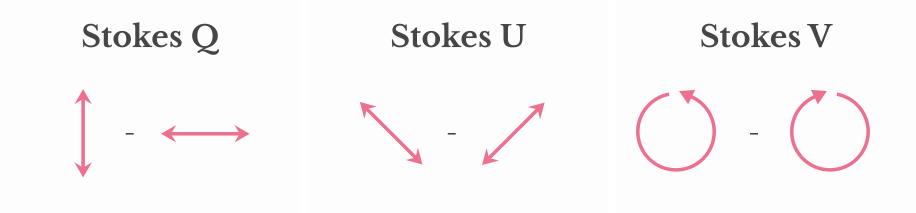
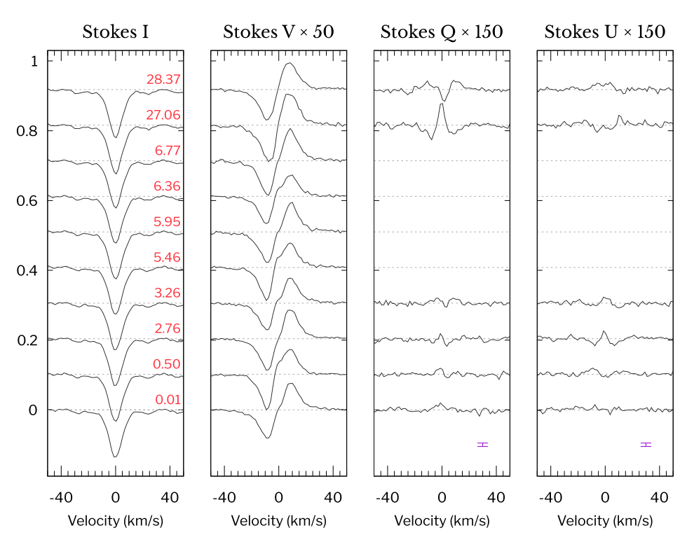
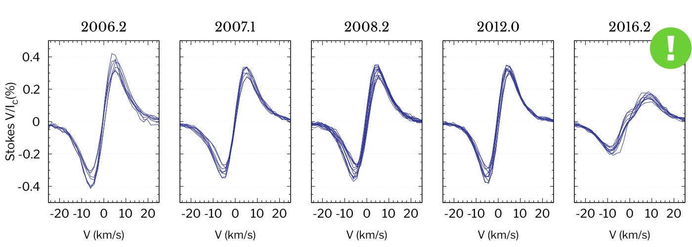
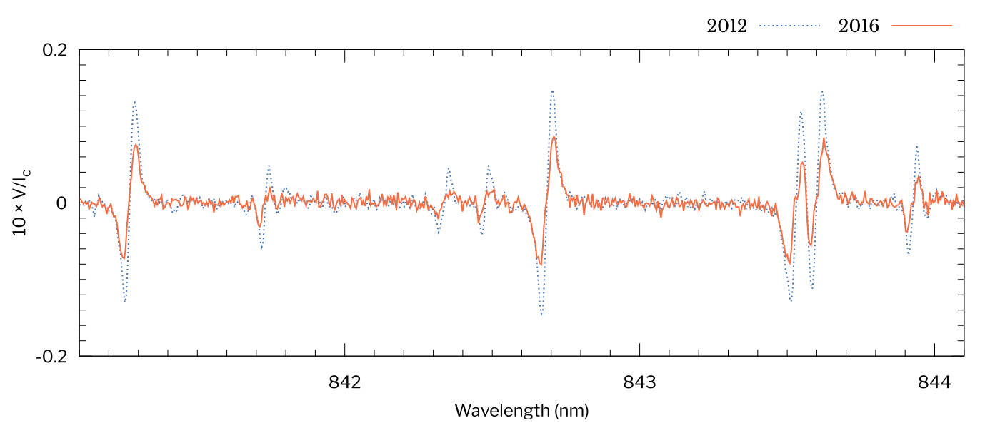
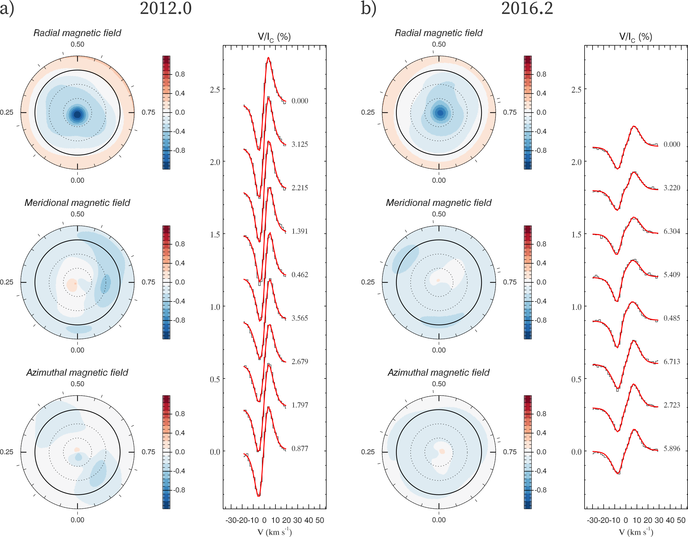

A sudden change of the global magnetic field of the active M-dwarf AD Leo
Alexis Lavail, Oleg Kochukhov, and Gregg Wade
A poster presented at the Cool Stars 20 conference
Useful links
Summary of the science in not-so-rigorous language
Our aim was to get the first observations ever of a M-dwarf in all four Stokes parameters. This means one gets the intensity spectrum (Stokes I), the circularly polarized spectrum (Stokes V) and the two linearly polarized spectra (Stokes Q and U). This is challenging because the linear polarization signal is usually an order of magnitude weaker than circular polarization (which is already not trivial to get).
Stokes V: difference between counter-clockwise and clockwise circular polarisation. Stokes Q: difference between linear polarisation along two orthogonal axes on the sky. Stokes U: same principle than Stokes Q, but the two orthogonal axes have been rotated by 45 degrees. Read more on Wikipedia.

In cool stars, the polarization signal in spectral lines is very weak, usually too weak to be very useful in fact. That’s why, in practice, one uses many spectral lines combined together to obtain an “average” spectral line profiles with enhanced signal-to-noise ratio. The method we commonly use is called Least Square Deconvolution (LSD).
When one has obtained observation at different rotational phases of a star, and computed the “average” LSD profiles, one can use the Zeeman Doppler Imaging technique to reconstruct the map of the magnetic field at the stellar surface. This is nearly always done only with circular polarization (Stokes V), and only one cool star has been studied with circular and linear polarization before (II Peg; Rosén et al. 2015). The consensus today is that you get a rough large-scale picture if you use only Stokes V, but you get a more reliable and more detailed picture if you add linear polarization. That’s why we tried to get full-Stokes observation of M-dwarfs: to improve our understanding of their surface magnetic fields.
Zeeman Doppler Imaging got its name from the two physical effects we are using together to reconstruct the magnetic field map. The Doppler effect causes that, as the star rotates, features at its surface will have a different Doppler shift if they are at different longitudes (they are coming towards us on one side of the star, going away from us on the other side). Because of this Doppler shift, one can locate the longitude of features from the wavelength shift of the feature on the spectral line. The Zeeman effect is behind the generation of features in the intensity and polarized spectra caused by the magnetic field.

We targeted AD Leo (= GJ 388), one of the M-dwarf with the strongest circular polarization signal out there (Morin et al. 2008), and famous active flaring M-dwarf, hoping to detect nice linear polarization signatures. We observed the star several times in 2016 with the ESPaDOnS spectropolarimeter at the Canada-France-Hawaii Telescope. We got excellent data, and computed LSD profiles combining the signal from more than a thousand atomic lines. Our LSD profiles are shown here below.

We did detect linear polarization signal, which is a first, and a cool achievement in itself. However, the signals were weaker than expected, and slightly too weak to be included for a magnetic field mapping. However, ere was a surprise. The circular polarisation (Stokes V) profiles, which used to be remarkably constant for years, were suddenly different. And this was quite unexpected. The evolution of those profiles with time is shown below.

We’re sure that this change is not an artifact from our multi-line technique. Indeed, our Stokes V spectra have such a good signal-to-noise ratio that we can see the change in individual spectral lines! This is illustrated below.

We used data from 2012 and our data from 2016 to map the magnetic field at the surface of AD Leo at those two epochs. The topology of the magnetic field did not change much, it remained a mostly axisymmetric dipole. However, the Stokes V filling factor (fraction of the surface covered with magnetic field and which generates net circular polarization) decreased from 13% to 7%, meaning that the magnetic field seems to have concentrated in smaller areas at the stellar surface. This decrease in filling factor explains the change in the data (the Stokes V profiles becoming broader and weaker). The two ZDI maps are presented below.

The bottomline is that such a magnetic field change was unexpected, un-explained by theories, and we might make interesting discoveries by monitoring active M dwarfs over timescales of years/decades. Particularly, this could help us knowing what kind of dynamos are generating the magnetic fields of these stars, quite different from our Sun.
Interested?
You’re very welcome to get in touch with me if you have questions, comments, ideas, or just want to discuss science :-). I will be around at CS20, and can be reached by e-mail.